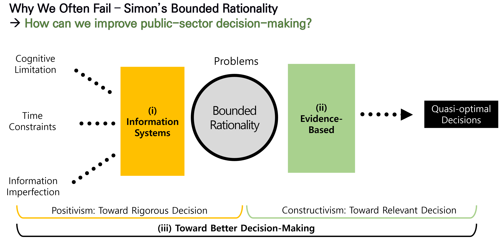

Research Interests
My research interests lie at the intersection of public policy analysis and management information systems. Toward better public-sector decision-making, my interests are
1. Management information systems
public value in IT
quantifying societal impact of information systems
2. Policy analysis and program evaluation
- experimental and quasi-experimental policy evaluation
3. Organization theory and behavior
strategic decision-making
human-machine cooperation in organizational decision-making
4. Evidence-based public policy and management (EBPPM)
being evidence-based is being data-driven?
what is the difference between evidence-based approach and contemporary policy analysis? (such as discourse policy analysis)
positivism vs. constructivism in research utilization
<<<<<<< HEAD
e8251dcc6056f1747a612c4efbcdb2beebb40e5c 
Methodologically, I'm interested in applied econometrics for quasi-experimental approach, machine-learning as well as other computational methods for both business and public data analytics, and I/O psychology survey analysis. Also I have prior experience in policy analysis techniques (such as Cost-Benefit Analysis, Analytic Hierarchy Process etc.)